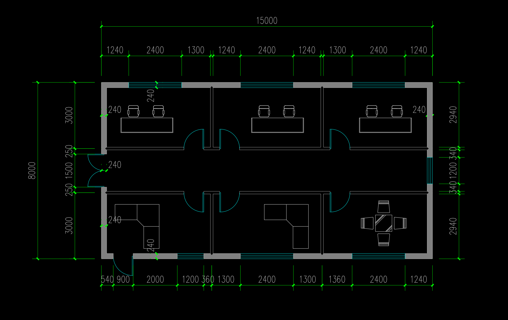
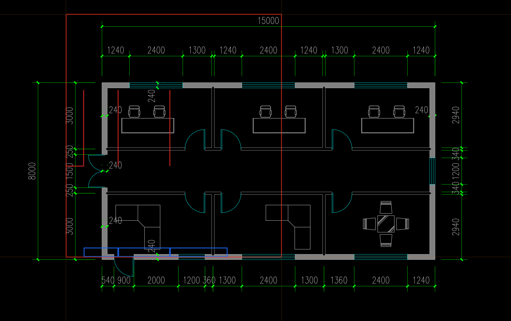
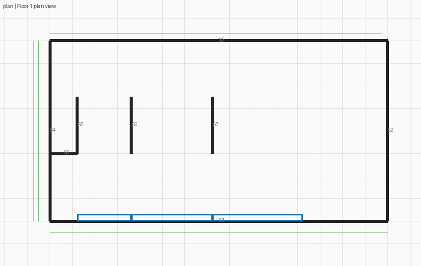
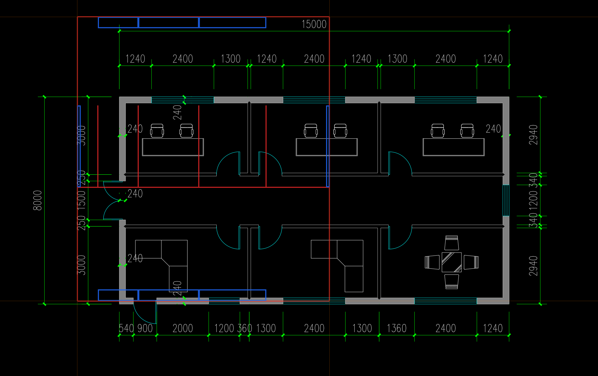
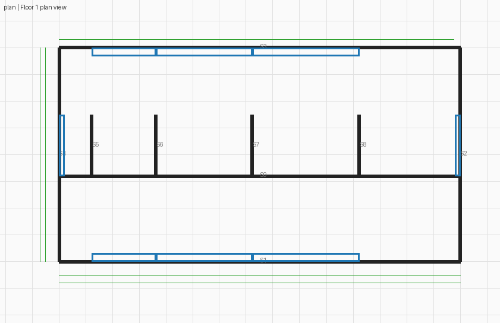

两轮均未通过原图核查，没有新 BIM。第二轮收到原图问题反馈后，标定锚点仍完全不变。 旧规则/六 CV 工具来自 723；宿主改成白名单 MCP，排除同墙网示例，无任意脚本能力，因此不是完整历史环境重放。
红线为提交墙，蓝框为提交窗；原图的青色线不是本次提交。 下方旧评分在两轮冻结后才由评测侧读取 GT，不回灌模型，也不折算整案百分制。

320.588 秒；8 墙线、3 窗框、16 条尺寸。 旧一层评分墙命中 0/4，窗命中 0/3。 外围数字边界 4/4 不检查原图配准，不能抵消下图错位。
模型原结论（包含错误自检） · 开发原图核查 · 传输与证据核验 · 可编辑 reading


310.725 秒；9 墙线、8 窗框、27 条尺寸。 旧一层评分墙命中 1/4，窗命中 0/3。 外围数字边界 4/4 不检查原图配准，不能抵消下图错位。
模型原结论（包含错误自检） · 开发原图核查 · 传输与证据核验 · 可编辑 reading

